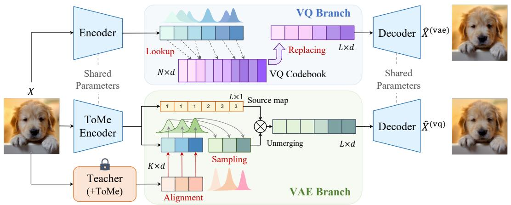
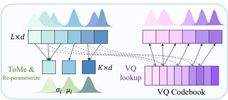

先说结论。视觉 tokenizer 正成为图像/视频 foundation model 底层接口，语义化 token 对 MIM、AR、diffusion 都重要。 尝试同时获得 VAE 重建质量和 VQ 生成友好离散性，并让 latent 更语义化。

Figureure 2 · : Overall Framework of MergeTokFigure 2: Overall Framework of MergeTok. We propose a dual-branch architecture that jointly optimizes continuous and discrete representations with shared encoder and decoder. (i) VAE Branch (Bottom) applies ToMe [1] to extract dense semantic tokens, which are aligned with a teacher model (also equipped with ToMe). The resulting source map is then employed to unmerge the groups back to the full lattice for reconstruction. (ii) VQ Branch (Top) inherits this source map to induce group-aware clustering, enforcing intra-group diversity and inter-group exclusivity constraints that stabilize the training of the discrete codebook.这张图概括 MergeTok 的整体方法流程。阅读时先看模块之间传递的训练信号，再看作者如何把目标拆成可优化的子问题。

(c) MergeTok Tokenizer (Ours) Figure 1: (a) Discrete VQ(c) MergeTok Tokenizer (Ours) Figure 1: (a) Discrete VQ. Features are quantized by nearest-neighbor codebook lookup, but codebook updates can be sparse. (b) Continuous VAE. Features are mapped to continuous Gaussian latents through reparameterization for stable reconstruction. (c) MergeTok. MergeTok adopts a dual-branch design to jointly optimize VAE and VQ tokenization. The VAE branch introduces online token merging to inject semantic structure into continuous latents, while the resulting token-similarity information is used to guide group-aware VQ quantization, improving discrete token learning.这张图/表用于判断 MergeTok 的实验收益来自哪里。重点看替换、消融或跨模型设置下趋势是否一致，而不是只看单个最高分。
核心问题
视觉 tokenizer 正成为图像/视频 foundation model 底层接口，语义化 token 对 MIM、AR、diffusion 都重要。